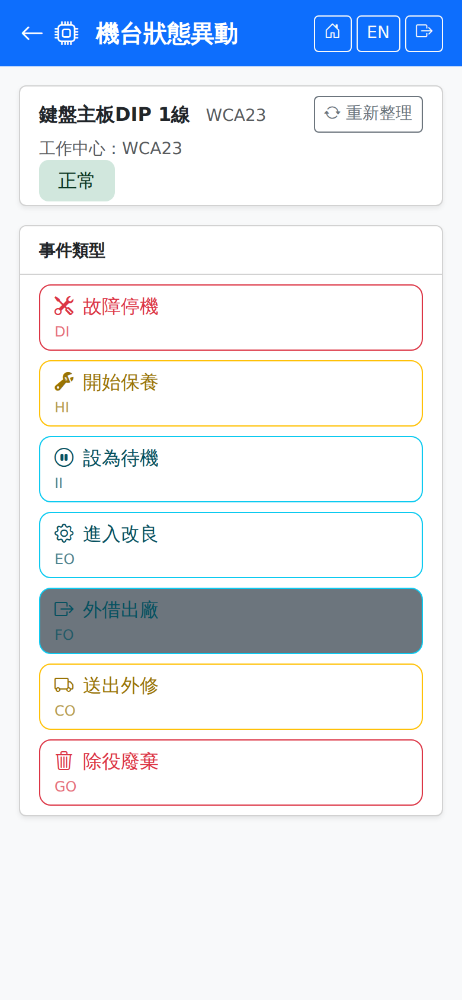

機台狀態異動Machine Status
掃機台 QR Code 或輸入機台代碼後，畫面顯示該機台目前狀態與此刻可執行的事件。可執行的事件由目前狀態決定，例如「正常」的機台才看得到「故障停機」，已「廢棄」的機台沒有任何可執行事件。Scan the machine QR code or type the machine code, and the screen shows the machine's current status and the events available right now. What is available depends on the current status: only an available machine offers "Breakdown", and a retired machine offers nothing at all.

操作步驟Steps
事件與狀態對照Events and statuses
每個狀態可執行的事件如下。事件的兩個字母是系統代碼，會顯示在按鈕右側：The events available in each status are listed below. The two letters are the system code, shown at the right of each button:
| 目前狀態Current status | 可執行的事件Available events |
|---|---|
| 正常Available | 故障停機 DI、開始保養 HI、設為待機 II、進入改良 EO、外借出廠 FO、送出外修 CO、除役廢棄 GOBreakdown DI, Start Maintenance HI, Set to Standby II, Enter Modification EO, Loan Out FO, Send for External Repair CO, Retire / Scrap GO |
| 待機Standby | 恢復正常 CI、故障停機 DI、開始保養 HIRestore to Available CI, Breakdown DI, Start Maintenance HI |
| 故障停機Breakdown | 故障排除 DO、開始保養 HI、送出外修 CO、除役廢棄 GOBreakdown Resolved DO, Start Maintenance HI, Send for External Repair CO, Retire / Scrap GO |
| 保養中Maintenance | 保養完成 HO、故障停機 DI、除役廢棄 GOMaintenance Done HO, Breakdown DI, Retire / Scrap GO |
| 外修中External Repair | 恢復正常 CI、除役廢棄 GORestore to Available CI, Retire / Scrap GO |
| 改良中Modification | 恢復正常 CI、除役廢棄 GORestore to Available CI, Retire / Scrap GO |
| 外借Loaned | 外借回廠 FIReturn from Loan FI |
| 廢棄Retired | 無——已除役的機台不再提供任何事件。None — a retired machine offers no events. |
狀態異動會影響派工A status change affects dispatches
機台轉為不可用的狀態（如故障停機、保養中）時，系統會一併處理該機台上的派工，並在送出後彈出視窗告知影響範圍；機台恢復為正常或待機時，因機台停用而暫停的派工會自動恢復：When a machine moves to a status where it cannot run (breakdown or maintenance, for example), the system also deals with the dispatches on it and shows a dialog afterwards saying what was affected. When the machine goes back to available or standby, the dispatches held because it was down resume automatically:
| 原派工狀態Dispatch status | 系統的處理What the system does |
|---|---|
| 已排程Scheduled | 退回待排，需重新排程到其他機台或時段。Sent back to pending so it can be rescheduled onto another machine or slot. |
| 準備中、準備完成、待首件、生產中Setup, Ready, Pending FPI, In Progress | 轉為暫停（原因：機台停用），現場無法繼續作業；不會被重新排程移走。機台恢復時自動回到原狀態；急件可由生管在桌機「派工作業 → 暫停處理」換機續做。Put on hold (reason: machine down), so the floor cannot carry on, and rescheduling does not move them. They return to their previous status automatically when the machine is back; for urgent work, production planning can switch them to another machine on the desktop under Dispatch Operations → Handle hold. |
斷線時When the connection drops
送出機台狀態異動時若剛好斷線，會先暫存在手機，並且是最優先的項目，恢復連線後最先送出——機台停機的消息越早進系統，排程重算越準。停機時間記的是按下送出的那一刻，不是恢復連線的時間。詳見斷線保護。If the connection drops just as you submit a status change, it is saved on the phone as the highest priority item and sent first when the connection returns — the sooner a stoppage reaches the system, the better the rescheduling. The stoppage is recorded at the moment you tapped submit, not when the connection came back. See Disconnection protection.